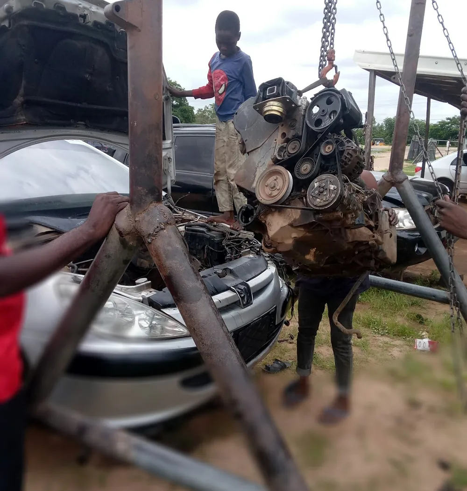

AUTOKORJAAMO KERAVALLA
Autohuolto,
johon voit
luottaa.
Huollot ja korjaukset kaikkiin automerkkeihin. Palvelemme henkilö- ja matkailuautoja Keravalla, jo 20 vuoden kokemuksella.
Öljynvaihto ilman ajanvaraustaHeisitie 4, Kerava
Heisitie 4 • KeravaKERAVA · FINLAND
01 /
20 vuotta
Kokemusta autojen huolloista ja korjauksista
02 /
Kaikki merkit
Henkilöautot ja matkailuautot
03 /
Autofit
Kuulumme valtakunnalliseen korjaamoketjuun
PALVELUMME
Huoltoasiat
hoituvat täällä.
Olipa kyse auton normaalista huollosta, korjauksesta tai nopeasta öljynvaihdosta, autamme löytämään sopivan ratkaisun.
Kaikki palvelut
KUVITUSKUVA · Ei tämän yrityksen henkilöstöä tai toimitiloja.
KORJAAMOMME
Keravalla.
Aidon työn äärellä.
Räsäsen Autohuolto on Autofit-ketjun jäsen. Ketjun osana huolto- ja korjaustyöt tehdään ammattitaidolla, ja yrityksen mukaan työlle sekä käytettäville alkuperäisvaraosille annetaan takuu.
- ✓ Merkkiriippumaton korjaamo
- ✓ Kokemusta henkilö- ja matkailuautoista
- ✓ Autofit-ketjun tuki
KÄYNNISTÄ HUOLTOASIA
Olisiko aika
huoltaa autosi?
Kerro autostasi ja huoltotarpeestasi. Saat yhteyden suoraan Keravan korjaamoon.